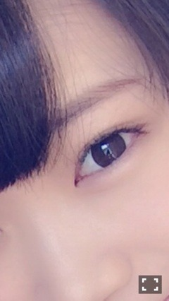

| 2013/12 27 Fri | 斎藤ちはる 京都(´>∀<｀)ゝ |
ちはるーむへようこそ☻
遅いけどメリークリスマスわず。笑
皆さんクリスマスはどうお過ごしでしたか？？
私はクラスの仲良し3人組でしゃぶしゃぶ女子会してきました٩꒰⍢ ꒱۶
美味しかったし楽しかったけどなんだか寂しかった٩꒰⍢ ꒱۶笑
(Ӧ)(ӧ)(Ӧ)(Ӧ)(ӧ)〜♬(Ӧ)(ӧ)(Ӧ)(Ӧ)(ӧ)〜♬
集計結果！
1位 みなみ
2位 琴子ちゃん
3位 絢音ちゃん
4位 愛未
ちはる
ものすごくダントツでみなみでした！！
ものすごかった！！
とゆことで
ふにふにしてて可愛いのは
この子♡
みなみ〜♡
みなみはいきなり「ちーちゃーん♡」って抱きついてきてくれたりしてかわいいの！！♡
ほっぺもふにふにだよ(o^^o)
今回はこの子！

今度タルト作って♡ってお願いしてるのに中々作ってくれない...(´･ω･`)
たべたい〜(´･ω･`)
(Ӧ)(ӧ)(Ӧ)(Ӧ)(ӧ)〜♬(Ӧ)(ӧ)(Ӧ)(Ӧ)(ӧ)〜♬
明日の京都での全国握手会はさゆりんご！！
さゆりんごファンの方々、何話したらいいかなーって思ってる方いたら
ディズニーの話とかUSJ(ユニバ)の話とか
関西のオススメスポットとか
関西のオススメ名物食べ物とか
話してくれたら嬉しい！！！
もちろん他のなんでも待ってますよ(o^^o)
さゆりんご〜ぱ〜んち((⊂(`ω´∩)
そしてそして、個別握手会でも待ってます！！
今回は自分の中で結構ラブリー系です(* ˆωˆ *)ふわふわ
ちはる まあや 生駒 ずーりん まなつ
最近ずーをずーりんと呼ぶのにはまってる！
川後をかわたんと呼ぶのにもはまってる！
まひろをまにと呼ぶのにもはまってる！
愛未をたむみかん、又はあみたむと呼ぶのにもはまってる！
まとめると、
かずみん→ずーりん
川後→かわたん
真洋→まに
愛未→たむみかん、あみたむ
みんなこう呼ぶと振り向くのがかわいいよね♡笑
ばいるんっ
るんるんっ
ちはるんっ
(´>∀<｀)ゝ